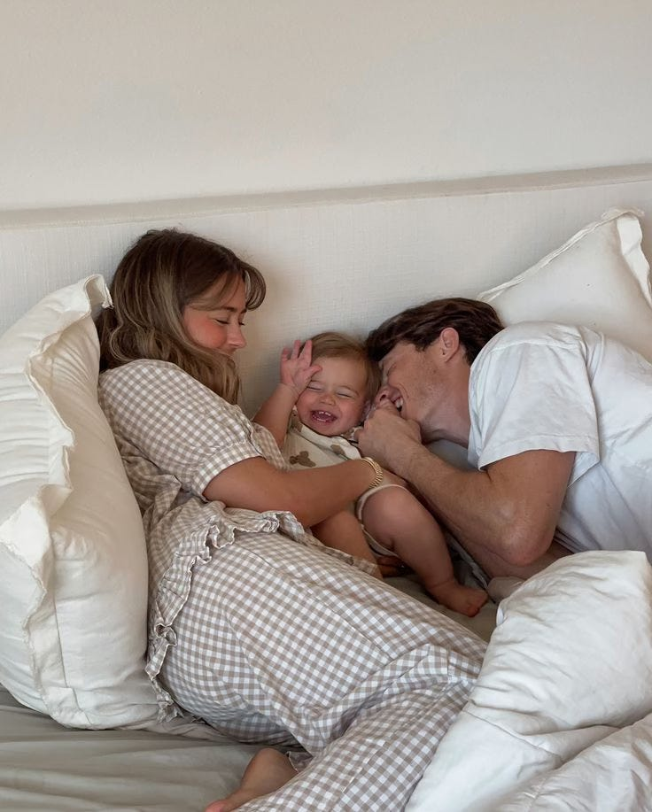

Prioridade

(Imagem: Pinterest)
Teca lembra como se fosse ontem… aquela sexta-feira à noite no bar Tudo Legal — que tem a cerveja mais gelada da cidade.
Ela não lembra o momento exato em que reparou no Ike, mas lembra de ter olhado para ele e se encantado com a beleza e o charme. Ela também lembra que ele tinha o braço todo tatuado.
- Em algum momento da noite, Teca levantou-se da mesa para ir ao banheiro. Passou bem perto dele e deu aquela olhada.
Ela não lembra se ele olhou de volta, mas só sabe que, ao voltar do banheiro, ele tinha ido embora. Aproveitou a desilusão e foi encontrar as amigas em um bar de vinhos.
No dia seguinte, Teca já tinha ingresso para uma festa cheia de amigos e conhecidos. Chegando lá, deu de cara com o gato tatuado — que, desta vez, não estava acompanhado.
Ele logo falou: “você estava no Tudo Legal ontem?” Ela já sorriu internamente, sabendo que ele também tinha reparado nela.
Ike disse que precisava ir ao banheiro, mas queria muito conversar com ela. Teca ficou com medo de levar um perdido, mas resolveu esperar — e ele já voltou roubando um beijo.
- Curtiram muito a festa juntos, conheceram amigos um do outro e trocaram contatos. Mas, ainda assim, ela achou que não daria em nada.
Ela foi embora para casa feliz e ainda mandou no grupo das amigas que tinha ficado com o gato tatuado da sexta. Elas deliraram. risos.
No início, a paquera caminhou a passos lentos. Eles conversavam de vez em quando até passarem a conversar todos os dias. Saíam durante a semana, até se incluírem nos programas do final de semana.
Teca lembra de um jantar superespecial, em que olhou para o Ike e disse: “você é um dos caras mais interessantes que eu já conheci!” — e ele era mesmo.
Estavam juntos há alguns meses, e todo mundo perguntava quando o pedido de namoro iria acontecer. Teca não sabia ao certo, mas tinha uma única certeza: estava completamente apaixonada.
- No dia 03/12/2017, o pedido foi realizado. Ike disse que não estava enrolando, mas sim se ajeitando para ser o melhor namorado que poderia ser.
No início, Teca era muito ciumenta, mas é porque, como bem disse Friedrich Nietzsche: “as coisas mais preciosas são adquiridas com paciência — e confiança é uma delas.”
O tempo passou, e eles construíram um namoro muito saudável e maduro. Leve, simples e “só dos dois”.
Viajaram para o Rio e para Bariloche. Teca entrou na onda do Ike com o snowboard e só levou tombo — mas a viagem foi deliciosa. Foram para Nova York, Ilhas Maurício e Punta del Este.
Durante a pandemia, eles ficaram ainda mais juntos. Faziam churrasco, inventavam receitas e assistiam lives.
- Foi aí que começaram a sentir falta de um espaço só deles — e veio a ideia de juntar as escovas de dente.
Teca pensava que só sairia de casa para casar, mas, se tem uma coisa que ela aprendeu, é que não adianta fazer planos de longo prazo. A vida sempre nos vira do avesso.
Antes de dar esse passo, Teca ouviu de algumas pessoas que a convivência é muito difícil e que o primeiro ano dividindo o lar é sempre sofrido — mas ela não poderia discordar mais.
É claro que dividir a vida com outra pessoa envolve vários desafios, mas ela diz que o lado bom é muito melhor. Dormir e acordar juntos. Encontrar o Ike no final do dia com aquele sorriso lindo.
- Para eles, morar juntos nunca foi um test drive. Desde que tomaram essa decisão, encararam o compromisso com seriedade.
Mas Teca sempre disse que sonhava com um pedido de casamento. E, a cada viagem ou jantar, crescia uma expectativa de que aquele seria o momento.
Até que, durante uma viagem à praia, Ike acordou Teca e disse: “vida, o pessoal da recepção ontem me falou que hoje teria um café da manhã diferente lá na praia! Vamos?”
Foram caminhando, até que ela viu uma linda mesa de café da manhã montada com dois lugares. Mas a ficha só caiu quando viu uma caixinha de anel. E ele completou: “Calma, que eu ainda vou te pedir em casamento.”
Ike ajoelhou e abriu uma caixinha com um anel verde — a cor preferida da Teca. A cena era tão perfeita que ela mal podia acreditar que fosse real. Já pensou casar com o amor da sua vida?
- O dia 13/05/2023 foi inesquecível. O Dia Branco dos dois. Como bem disse Geraldo Azevedo, eles continuam juntos “pro que der e vier.”
Como a bruma leve das paixões que vêm de dentro, no ano seguinte, Teca acordou Ike com uma cartinha dizendo: “Papai, estou chegando! Obrigada por cuidar tão bem da mamãe. Te amo muito!”
Eles tinham certeza de que seria uma menina, Maitê. Mas, como a vida sempre vira do avesso, o ultrassom revelou que um menino estava chegando. Logo após a consulta, já tinha nome: José.
No dia 17/09/2024, o grande amor dos dois chegou ao mundo às 07h25. Papai cortou o cordão umbilical — e foi a maior emoção da vida.
Teca sabe que muitos casais se perdem ao terem o primeiro filho. Mas, com muito esforço, para ela, o laço familiar só cresceu — e a admiração também. O amor, ainda mais.
- Os dois continuam namorando e têm um lema que combinaram desde antes do casamento: se priorizar.
No início, eram só os dois. Quando José crescer, volta a ser só os dois. Então, eles se priorizam para nunca se perderem. Se escolhem todos os dias, amam-se todos os dias — para o resto da vida.
Ficou curioso para conhecer o Ike, a Teca e o José? Eles apareceram no nosso Instagram. 🧸
Deixe um comentário